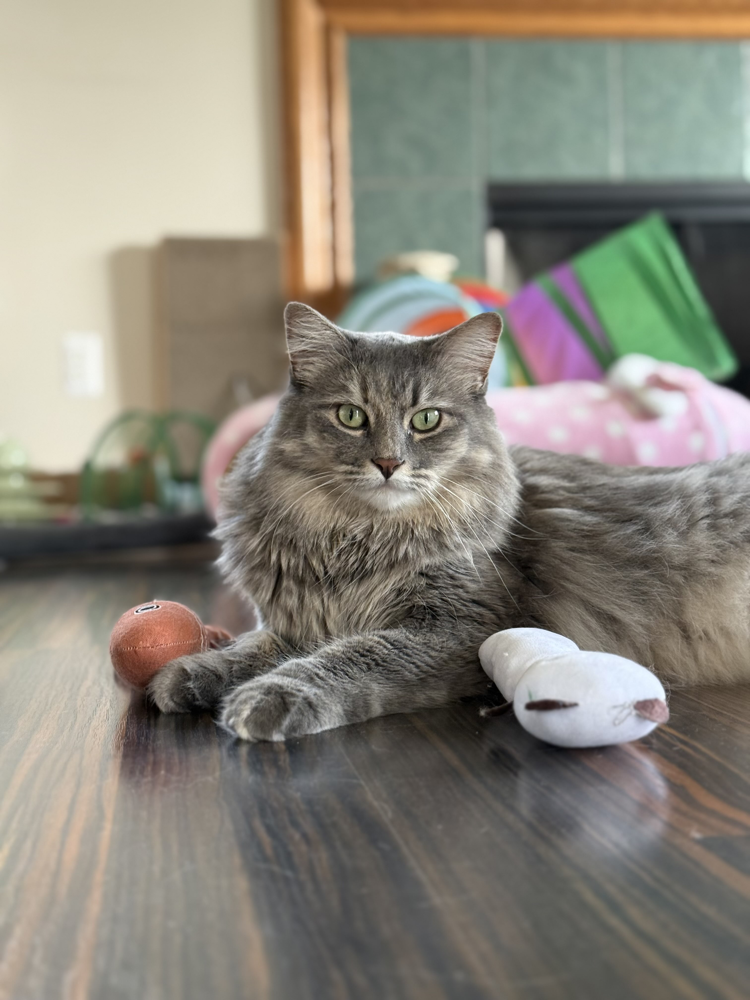
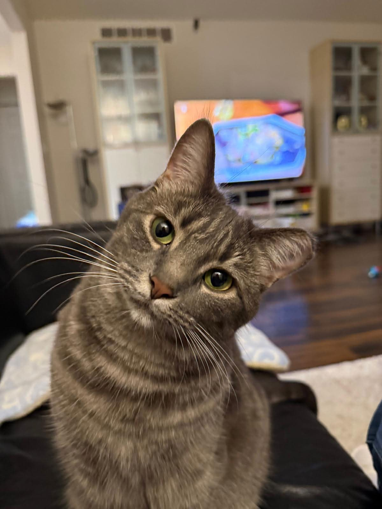
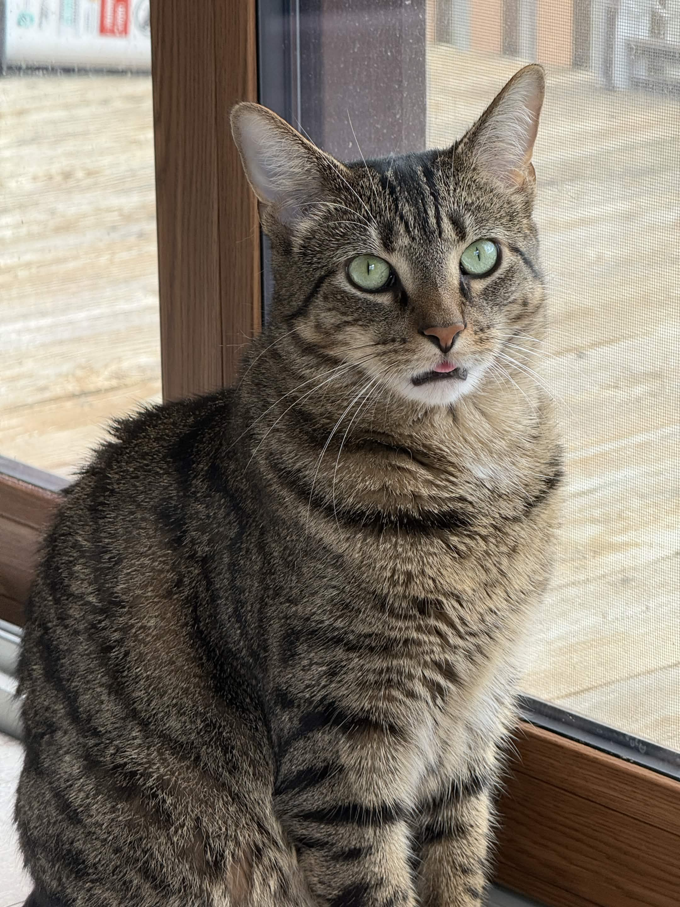
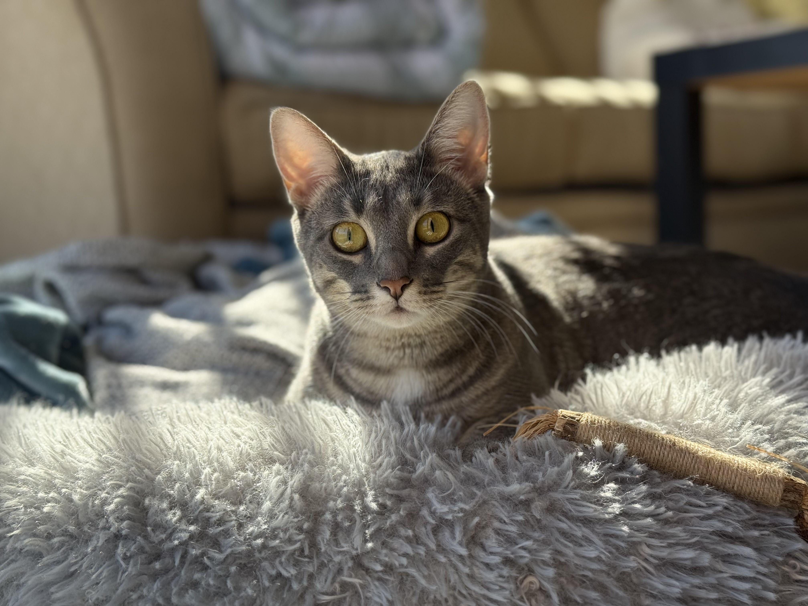

Let me introduce my family's four cats:

Taro: My 3 year old cat who loves to go outside (with supervision) 
Churro: Taro's younger sister and the foodie of the family 
Waffles: My older sister's eldest son who loves being held like a baby 
Pancakes: Waffles' younger sister who has a lot to say and makes sure everyone hears
For more Lee Family cats content, follow tarochurro.jpg on Instagram!